WORKFLOW
As this fundraising event was a pilot project for The Liberty Project and there was no specific webpage set up for the event or database management system for organizing donor information, there was no set methodology in place to follow. The team at Vanritto developed a workflow to develop the event webpage on The Liberty Project’s website for the purpose of increasing engagement with the public about the event and The Liberty Project, providing an ability for the public to donate and register for the event, and to develop a donor database system to allow proper management of donor information for future use.
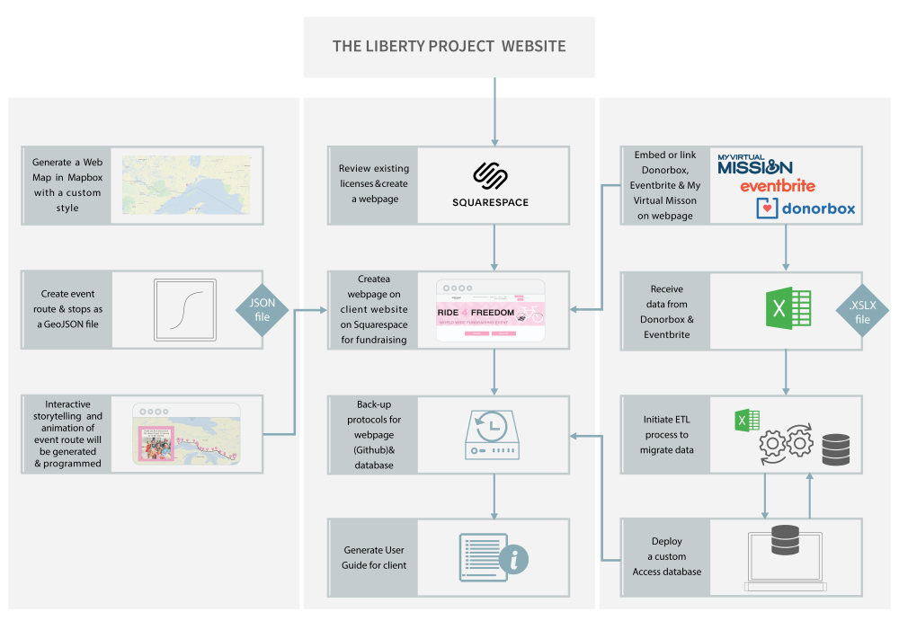The project was built on the foundation of four academic requirements:
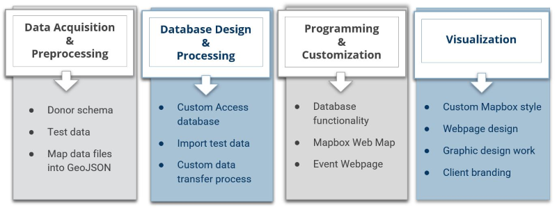CREATING TEST DATA
Donorbox and Eventbrite are the third-party web applications used for the event for to allow the public to donate and register for the event. The applications collect information related to the donors which are accessed by the Client by downloading as CSV spreadsheet. The Client forwarded empty Donorbox and Eventbrite CSV files as an example to the team to build the database required for the project. The headers from the empty CSV files were loaded into the online data generation site, Mockaroo where the data types for each attribute field were set, which allowed the team to export unique data for testing and development.
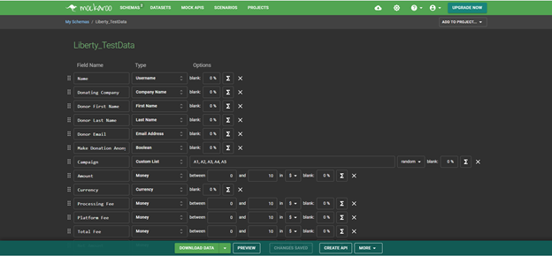BUSINESS RULES & PRIMARY TABLES
The Client requested an Access database to enable storage and query of donor and registrant data and tracking, engagement, and advertising. Once the test data was loaded into the database, four primary tables were developed based on the Client’s business rules: Donations, Donors, Transactions and Event Shirts.
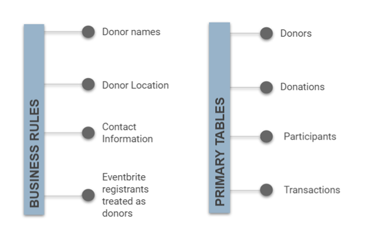ESTABLISHING THE DATABASE WORKFLOW
Data modelling helped illustrate the data flow inside the database. This process allowed the team to functionally extract additional information and to streamline the development of interactive tools to improve the overall database functionality.
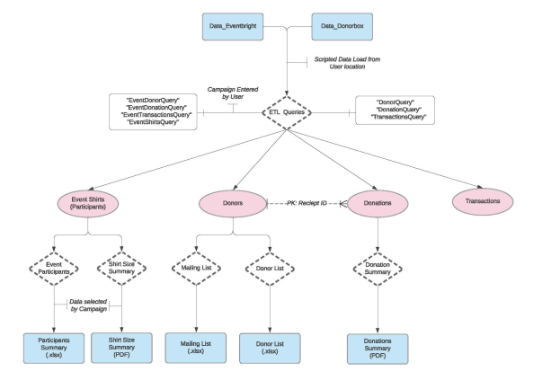CUSTOMIZATION FOR MAXIMUM EFFICIENCY
The Graphic User Interface (GUI) was designed to streamline the functions of the database based on the data transfer process (ETL) workflow. The GUI uses custom programmed buttons to run and automate all steps of the ETL process for the client. The GUI was designed using forms tools and buttons in the Access database and manipulating their events to run programmed functions using Microsoft Visual Basic for Applications (VBA).
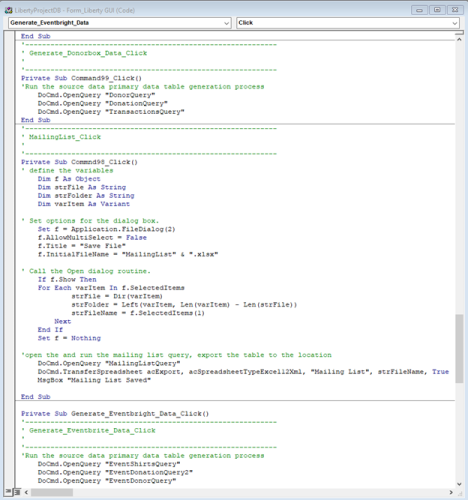TECHNOLOGY USED


SQUARESPACE DESIGN TOOLS
To build the Event Webpage on the Client’s website on Squarespace, the team utilized Squarespace’s built-in web design tools. This included the Page Builder tools where the main webpage was generated using the Index tool and Add Section tool to develop 5 main sections. The Basic Tools such as Text, Button, Image, Spacer, Embed, and Code Block and Integration tool, Instagram, were then used to develop elements within each section.
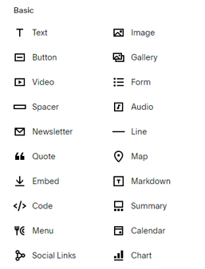CSS CUSTOMIZATION
Next, the team worked to customize the design of the webpage to make things fit and work properly beyond the default Squarespace settings. This was done using Custom CSS within the CSS Editor window on various elements such as setting the Web Map dimensions to span the width of the webpage to allow it to be a centre piece of the page, making a pop-up window to open the Web Map for users that may be experiencing technical difficulties, ensuring the size of the Donorbox widget and top banner sit the page properly, have the page display proper responsive design, as well as enhancements to the Buttons, Links.
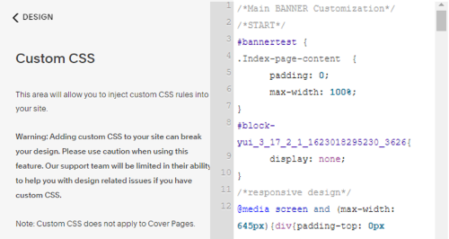VISUALIZATION
The design of the webpage was developed to be user-friendly and intuitive. It is designed into 5 clear sections with Donate and Register Button links integrated into each section to allow the user the easy ability to donate or register for the event wherever they are on the page. Client branding such as font and colour was used within the design of the webpage along with complimentary colours, which was also used in the design of the web map. The webpage was also styled to match the Client’s overall website look and feel so it blends in with the rest of their webpages. Additionally, the webpage was designed to be responsive for all devices and follow web accessibility guidelines.
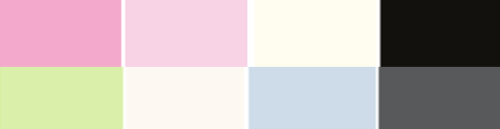THIRD-PARTY APPS
Third-party applications were implemented into the Event webpage to build a fully functional digital platform that checked off all the boxes that the Client wanted and needed for this fundraising event. This included Donorbox for safe online donation collection, Eventbrite for event registration, and My Virtual Mission for mileage tracking and live tracking of event registrants.
My Virtual Mission was key to the event now being 100% online as a virtual event instead of in person. Event registrants are emailed a link to join the Ride 4 Freedom mission on My Virtual Mission once they register for the event through Eventbrite where they will then have access to the My Virtual Mission Portal. On there, they can input distance they completed in their own neighbourhood using their rides tracked in Strava, which will then translate to distance on the ride. Additionally, the public will be able view live tracking of where registrants are on the route with a public map from My Virtual Mission.
TECHNOLOGY USED


CUSTOM MAP STYLE
A custom map style was created using Mapbox Studio to fully customize the entire look of the Web Map to ensure it met the Client’s design needs. The team styled the map with a simplistic design in order to have the bike route be centre stage of the Web Map. Just like the webpage, The Liberty Project's colours along with complimentary colours were used so that the Web Map seamlessly integrated into the Client's website.
The Web Map style was published as a URL and is referenced in the JavaScript file along with a personal Mapbox API Access Token for the base map style to be displayed on the Web Map. Map style rendering is additionally supported with a Mapbox JavaScript Library known as Mapbox GL JS.
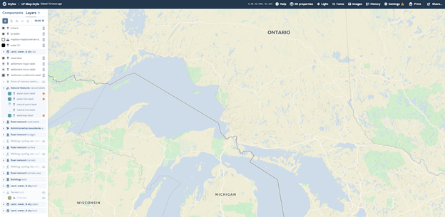GeoJSON ROUTE AND STOPS
The Client provided data layers for the bike route as KMZ files that needed to be converted to GeoJSON format. The KMZ files were uploaded to Google My Maps to enable the directions, stops, start and finish points to be displayed and converted to KML. The KML files were then converted into a GeoJSON format that could be easily used with Mapbox through Mapbox’s own online converter. The final result derived from the clients KMZ files, were two GeoJSON files with directions of the route and all planned stops.
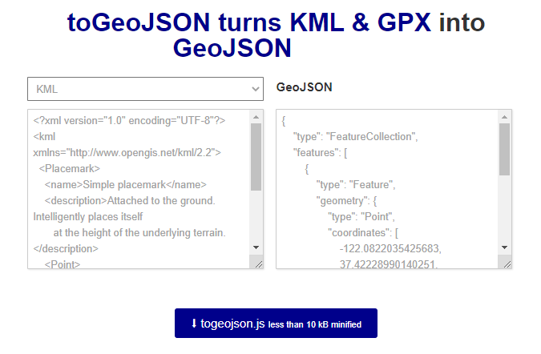 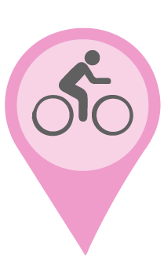 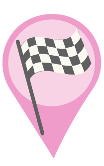CREATING CHAPTERS
Mapbox Scrollytelling works by implementing a series of Chapters along a path. To tell The Liberty Project fundraiser story, interactive chapters coincide with the start, stop, and finish points of the bike route. Each scheduled stops along the way has a chapter that explains information about the event, The Liberty Project, and Mozambique. The scrollytelling Web Map makes use of the flyTo zoom feature, creating a flying motion when scrolling between locations on the map. The content for the chapters is stored in a GitHub repository and inserted into the JavaScript file for each chapter. Images are linked to the content in boxes in a similar way. The styling for the content is managed by the CSS file.
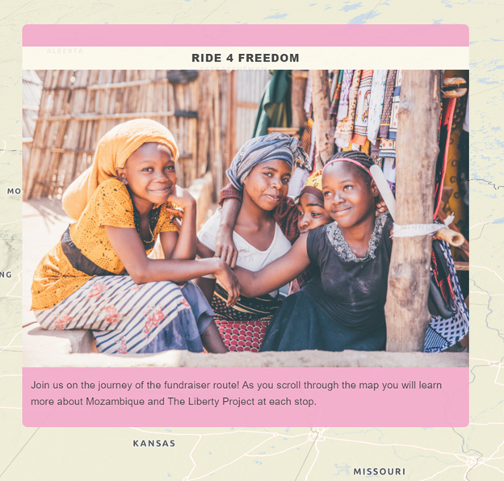CUSTOMIZATION
For the route to be displayed on the Web Map, JavaScript is used by adding the source information as a layer referencing the GeoJSON. The stops have been implemented in the same way as the route. To further enhance the design of the Web Map, custom icons and labels were produced. The icons were sourced from Freepik with edits made in Adobe illustrator. The icons were styled carefully by selecting colour choices to not only coincide with the Client's palette, but to also ensure high contrast design to draw the user’s eye to the stop locations. Extra steps were taken to then display the customized icons and labels, in both HTML and Javascript in order to put the icons and labels on the map.
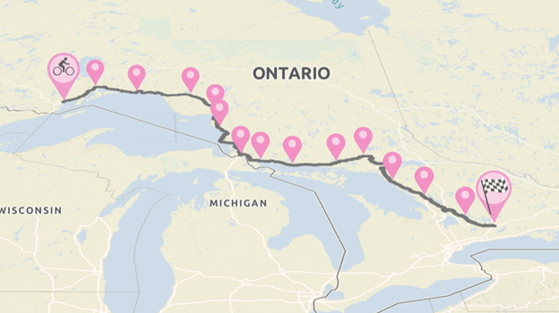 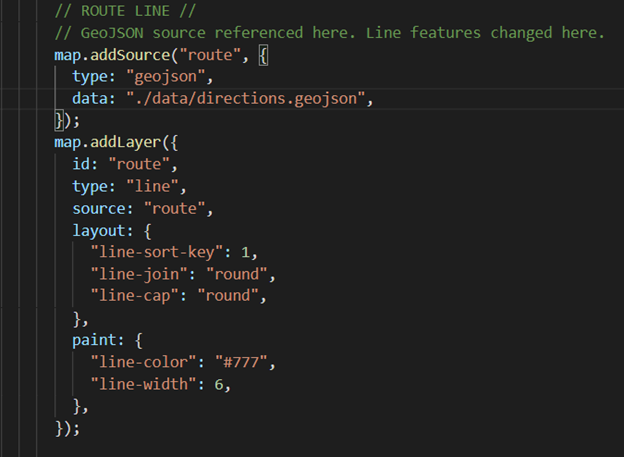